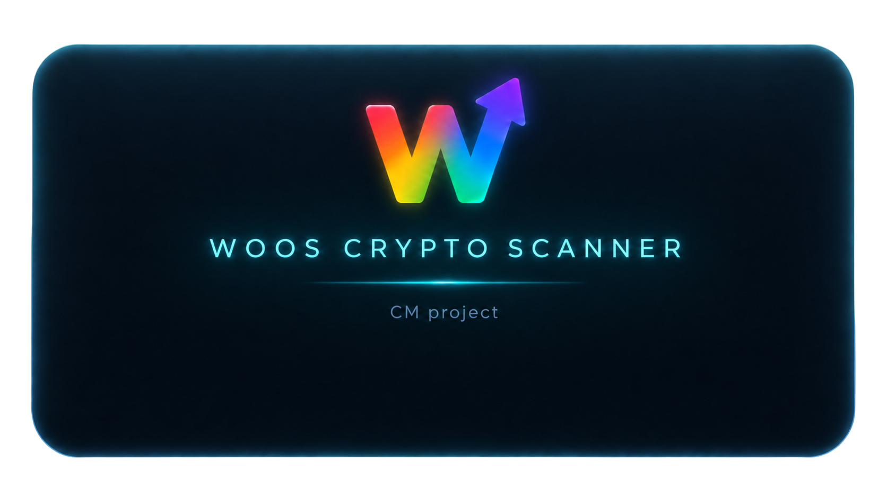

WOOS SCANNER
UPBIT · BITHUMB · BINANCE · REAL-TIME
v4.1.2 · p3.1.2
IDLE
--:--:--
📡 스캐너
📷 스냅샷
📊 추적 분석
0
▶ SCANNER CONTROLS
▶ SCAN START
CORS OK
UPBIT
CF Worker
BITHUMB
CF Worker
BINANCE
⚙ ADVANCED SETTINGS
BINANCE PROXY URL (Cloudflare Worker)
상태
미설정
SCANNER API BASE (Workers URL)
SCANNER TOKEN
상태
미설정
스캔 심볼 수
최소 점수 (기본 4)
캔들 수 (50~200)
📲 텔레그램 알림 설정
▶ TELEGRAM ALERT
테스트 전송
미설정
Bot Token (텔레그램 @BotFather에서 발급)
Chat ID (@userinfobot으로 확인)
S등급 알림
A등급 알림
PRE-PUMP 알림
Entry Ready 알림
쿨다운: PRE-PUMP 60분 | S등급 30분 | A등급 60분 | Entry 30분 | 같은 코인 등급 상승 또는 점수 +1 이상 시 재알림
▶ SCANNING
0%
준비 중...
TOTAL
0
🔥 S+
0
🔥 S
0
🟠 A
0
TOP SCORE
0
📡 동조
0
📦 캐시된 결과 표시 중
새로 스캔 ↺
🔘 전체
✅ 진입 가능
🟣 초기 매집
📡 동조 신호
GRADE:
ALL
🔥 S+
🔥 S
🟠 A
B
C
📷 Snapshot
종합점수순
S+ 우선
진입점수순
PRE-PUMP우선
변동률순
RSI순
동조 우선
📷 SNAPSHOT HISTORY
✕
SCAN START 버튼을 눌러 분석을 시작하세요
─
업비트: CORS 허용 (브라우저 직접 호출 가능)
빗썸: CORS 제한적 (fallback 처리)
바이낸스: 브라우저 직접 호출 차단 → 프록시 서버 필요
─
실서비스 권장: 자체 백엔드 프록시 서버 구성
🛠 진단 도구 (v3.5)
📲 TG 발송
⏰ 쿨다운 조회
💾 KV 저장 테스트
📊 Phase 2 Outcome Ops
🧬 마이그레이션
🧪 배치 검증
📦 큐 상태
× 결과 닫기
⚠ 본 도구는 기술적 지표 기반 참고 정보만 제공합니다. 투자 판단의 책임은 전적으로 본인에게 있습니다. 세력매집은 가능성 표현이며 확정이 아닙니다. 모든 투자에는 손실 위험이 따릅니다.
📷 기록된 알람 스냅샷을 검색/조회합니다. 최근 탭에서 알람 상세 · 등급 변화 · 전략 B · 뉴스 등을 확인할 수 있습니다.
⚠ 본 결과는
24H 테스트1 전용 기준
입니다. 기존 전략 TP1 은 변경되지 않았습니다.
Success ≥ +5% · Watch +3~+5% · Flat -5~+3% · Fail ≤ -5%
-
↺ 새로고침
📊 추적 분석
로딩 중
⏳ 대시보드 로드 중...
📋 알람 목록
— 펼치기 / 검색
✕
전체
분석완료
추적중
S+
S
A
로딩 중...
📈 TRADINGVIEW
-
✕
INTERVAL:
15분
30분
1시간
4시간
일봉
주봉
차트 로딩 중...
심볼:
-
인터벌:
1H
거래소:
-